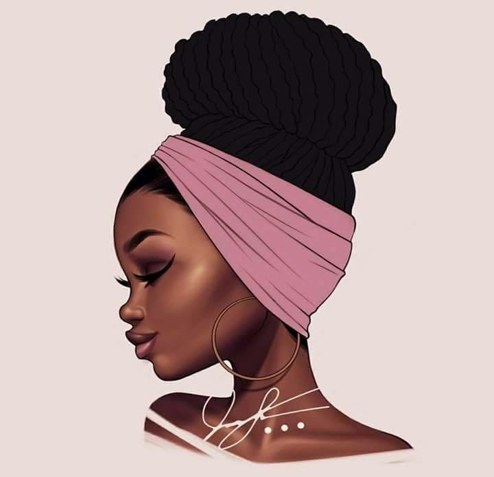

Moda en Tendencia
Peinados Art

La moda afro está viviendo un auge impulsado por el poder alcanzado por la vicepresidenta de la República, Francia Márquez, quien asume su estética como una forma de expresión política y ancestral. “Todo lo que tenga que ver con lo negro es político y es una construcción de algo. Tú ves a una mujer con un turbante y ahí te está hablando de doscientos… trescientos años de historia dice Shamyr Caicedo Rivas, creador y dueño de BPN (Básico pero Nítido), una de las marcas con reconocimiento en nicho.
Visita intergrupo